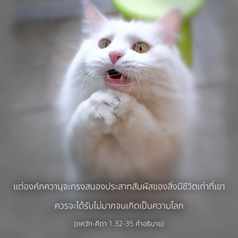

โอ้ โควินฺท เราจะได้รับผลประโยชน์อะไรหรือ จะเป็นราชอาณาจักร ความสุข หรือแม้แต่ดวงชีวิตเอง ในเมื่อตอนนี้พวกเขาทั้งหลายที่เราอาจปรารถนาได้มาเรียงรายอยู่ในสมรภูมินี้แล้ว โอ้ มธุสูทน เมื่อพระอาจารย์ พระบิดา บุตร พระอัยกา พระปิตุลา พระสัสสุระ พระราชนัดดา พระเชษฐภรรดา พระกนิษฐภคินี และเหล่าสังคญาติพร้อมถวายชีวิตและทรัพย์สินมายืนอยู่ต่อหน้า แล้วเหตุไฉนข้าต้องปรารถนาที่จะไปสังหารพวกเขาด้วย แม้ว่าพวกเขาอาจมาสังหารข้าก็ตาม โอ้ ผู้ค้ำจุนมวลชีวิต ข้าพเจ้าไม่พร้อมรบกับพวกเขาแม้จะเป็นการแลกเปลี่ยนกันทั้งสามโลก นับประสาอะไรกับแค่โลกนี้โลกเดียว เราจะได้รับความสุขอันใดจากการสังหารเหล่าโอรสของ ธฺฤตราษฺฏฺร

อรฺชุน ทรงเรียกองค์ศฺรี กฺฤษฺณว่า โควินฺท เพราะว่าองค์กฺฤษฺณทรงเป็นจุดมุ่งหมายแห่งความสุขทั้งมวลของวัว และประสาทสัมผัส เมื่อใช้คำสำคัญคำนี้ อรฺชุน ทรงแสดงให้เห็นว่าองค์กฺฤษฺณทรงควรที่จะเข้าใจว่าสิ่งใดที่จะทำให้ประสาทสัมผัสของ อรฺชุน พอใจได้ แต่องค์ โควินฺท มิได้ทรงหมายไว้เพื่อให้ประสาทสัมผัสของเราได้รับความพอใจเอง หากเราพยายามทำให้ประสาทสัมผัสขององค์ โควินฺท พึงพอพระทัยประสาทสัมผัสของพวกเราก็จะได้รับความพึงพอใจด้วยโดยปริยาย ในวิถีทางวัตถุทุกๆคนต้องการที่จะสนองประสาทสัมผัสของตนเองและต้องการให้องค์ภควานฺเป็นผู้รับคำสั่งเพื่อความพึงพอใจของเรา แต่องค์ภควานฺจะทรงสนองประสาทสัมผัสของสิ่งมีชีวิตเท่าที่เขาควรจะได้รับไม่มากจนเกิดเป็นความโลภ หากเราปฏิบัติตรงกันข้ามคือพยายามสนองประสาทสัมผัสขององค์ โควินฺท โดยไม่ปรารถนาสนองประสาทสัมผัสของตนเองด้วยพระกรุณาธิคุณขององค์ โควินฺท ความปรารถนาทั้งหมดของสิ่งมีชีวิตก็จะได้รับสนองตอบ ความรักอันลึกซึ้งที่ อรฺชุน ทรงมีต่อสังคมและสมาชิกในครอบครัวที่แสดงออกมา ณ ที่นี้ส่วนหนึ่งเนื่องมาจากความสงสารที่มีตามธรรมชาติ ดังนั้นพระองค์จึงทรงไม่เตรียมตัวที่จะสู้รบ ทุกคนต้องการแสดงความมั่งคั่งร่ำรวยให้เพื่อนๆและญาติๆเห็น แต่ อรฺชุน ทรงกลัวว่าบรรดาญาติและเพื่อนทั้งหมดจะถูกสังหารที่สมรภูมิ และตัวพระองค์เองจะทรงไม่สามารถแบ่งปันความร่ำรวยหลังจากที่ได้รับชัยชนะ นี่เป็นความคิดโดยทั่วไปทางชีวิตวัตถุ อย่างไรก็ดีชีวิตทิพย์นั้นแตกต่างออกไป เนื่องจากสาวกต้องการสนองพระราชประสงค์ขององค์ภควานฺ หากองค์ภควานฺ ทรงปรารถนาสาวกจะยอมรับความมั่งคั่งทั้งหลายเพื่อรับใช้พระองค์ แต่หากองค์ภควานฺทรงไม่ปรารถนาสาวกจะไม่ยอมรับแม้แต่สตางค์แดงเดียว อรฺชุน ทรงไม่ต้องการสังหารบรรดาญาติ หากจำเป็นต้องสังหารทรงปรารถนาให้องค์กฺฤษฺณทรงเป็นผู้สังหารเอง มาถึงจุดนี้ อรฺชุน ทรงไม่ทราบว่าองค์กฺฤษฺณได้สังหารพวกเขาทั้งหมดเรียบร้อยแล้วก่อนที่จะมาถึงสนามรบ และ อรฺชุน ทรงเพียงแต่มาเป็นเครื่องมือให้องค์กฺฤษฺณเท่านั้นความจริงนี้จะถูกเปิดเผยในบทต่อๆไป ในฐานะที่เป็นสาวกขององค์ภควานฺโดยธรรมชาติ อรฺชุน ทรงไม่ปรารถนาที่จะโต้ตอบกับการกระทำที่ต่ำช้าเลวทรามของสังคญาติ แต่นี่เป็นแผนการขององค์ภควานฺว่าทั้งหมดควรถูกสังหาร สาวกไม่ปรารถนาที่จะตอบโต้ผู้กระทำผิดแต่องค์ภควานฺทรงไม่ยอมอดทนต่อความผิดที่คนชั่วกระทำต่อสาวก องค์ภควานฺทรงให้อภัยกับคนที่ทำผิดต่อพระองค์ แต่จะไม่ให้อภัยกับคนที่ทำผิดต่อสาวกของพระองค์ ฉะนั้นองค์ภควานฺทรงมุ่งมั่นที่จะสังหารคนเลวทรามเหล่านี้ถึงแม้ว่า อรฺชุน ทรงปรารถนาจะให้อภัยพวกเขาก็ตาม